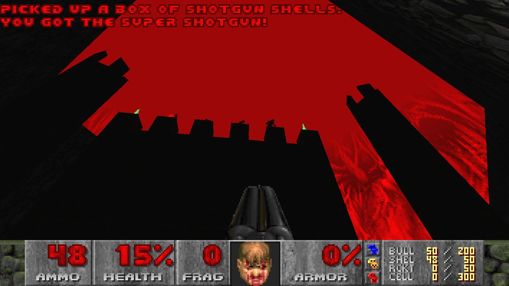
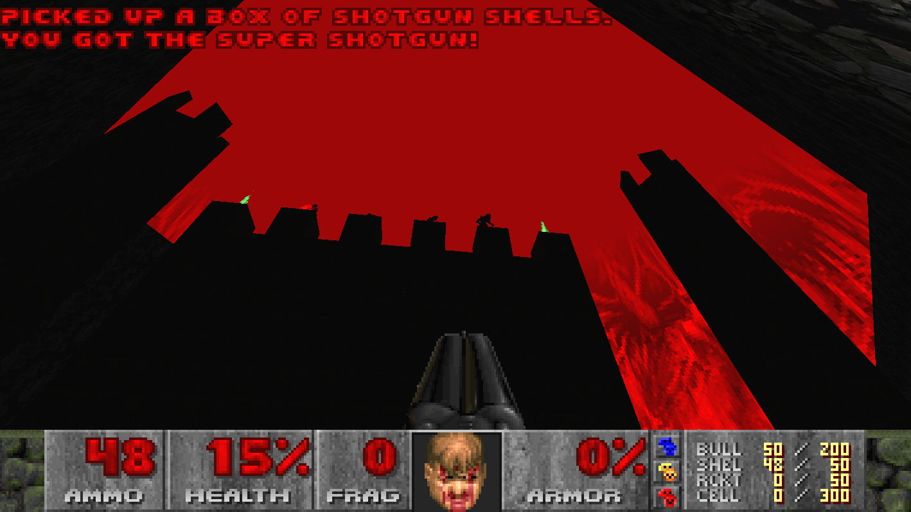

Here is where I put all my maps, sassy descriptions, screenshots and everything!
Most of my maps are for Doom, I tried mapping for TF2 and absolutely hated using Hammer.
Did you know the ancient Greeks had BFGs and Super shotguns? You didn't, because that is a lie.
Until now..
Yup! The dream you never had has come true! Greece is a 12-player Deathmatch map for DOOM that runs in GZDoom.
It has a big temple in the middle, a small cave and other thingies. Have fun!
To run the map, drag the zip files to the GZDoom executable.
Then, set deathmatch to 1 using this command:
deathmatch 1
then, run "map map01"


Download DM_Greece.zip
yyerrraarrsesssarseaandimthgrasssmannpunkyeeeyahhavinh
-Demoman
Highlands is a huge deathmatch map, with two castles, a cave and more stuff. This map is sponsored by the DeGroot family.
That is what I would've said if they had actually sponsored me (but that would be awesome.)
This map is a bit more complex that the other ones, so let me explain what is going on:
The map is broken up into two regions, one is the one with the two castles and the other is the area without
the castles (shocker). For players from the first area to get to the second, they must walk through through
the cave. From there, they can get access to the skull switch close to the gray castle, which lowers the door,
thus connecting the two parts of the map together with easy access. HOWEVER, you can use the other skull switch
to close the door, thus allowing access only through the cave, which means that you can camp there and frag
everyone who tries to cross.
To run the map, drag the zip files to the GZDoom executable.
Then, set deathmatch to 1 using the command "deathmatch 1".
Then, run the command "map map01" to load into the map.


Download DM_Highlands.zip
yyerrraarrsesssarseaandimthgrasssmannpunkyeeeyahhavinh
-Demoman, but EVIL!
Hellish Highlands is a variant of Highlands that takes place in hell. Not much to say, except that this is the Most accurate depiction of DeGroot keep in DOOM mapping history. Thanks a lot to MetalFortress on YT for the song. Here is the link: DeGroot keep Trap Remix
This map is supposed to be played with Respawning Monsters ON.
To run the map, drag the zip files to the GZDoom executable.
Then, set deathmatch to 1 using the command "deathmatch 1".
Then, run the command "map map01" to load into the map.
 

Download DM_Highlands.zip